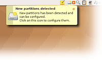
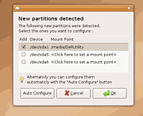
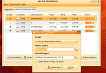

Disk Manager
Archivierte Anleitung
Dieser Artikel wurde archiviert, da er - oder Teile daraus - nur noch unter einer älteren Ubuntu-Version nutzbar ist. Diese Anleitung wird vom Wiki-Team weder auf Richtigkeit überprüft noch anderweitig gepflegt. Zusätzlich wurde der Artikel für weitere Änderungen gesperrt.
Zum Verständnis dieses Artikels sind folgende Seiten hilfreich:
Achtung!
Disk Manager wurde in Ubuntu 9.04 (Jaunty Jackalope) aus den Paketquellen entfernt, da er seit mehreren Jahren nicht mehr betreut wird und eine Menge Fehler enthält, die unter Umständen zu Datenverlust führen können. Es wird von der Nutzung abgeraten.
Disk Manager  ist ein Programm mit dem man grafisch die Datei /etc/fstab und somit die Einhängepunkte der Festplatten-Partitionen samt Einhängeoptionen bearbeiten kann. Dabei ist besonders die Fähigkeit interessant Festplatten automatisch in das System einzuhängen.
ist ein Programm mit dem man grafisch die Datei /etc/fstab und somit die Einhängepunkte der Festplatten-Partitionen samt Einhängeoptionen bearbeiten kann. Dabei ist besonders die Fähigkeit interessant Festplatten automatisch in das System einzuhängen.
Folgendes wird hierbei ermöglicht:

Automatisch neue Partitionen beim Start erkennen und einhängen
Volle Kontrolle über die Konfiguration der Dateisysteme
Aktivieren/Deaktivieren von Schreibzugriff auf NTFS-formatierte Datenträger
Installation¶
Für Intrepid¶
Unter Ubuntu 8.10 ist Disk Manager in den Paketquellen enthalten. Hierfür muss man lediglich folgendes Paket installieren [1]
disk-manager (universe, [2])
Für Hardy¶
Der Autor bietet auf seiner Webseite ein Paket für Feisty  an, das heruntergeladen und unter Hardy Heron 8.04 manuell installiert werden können [3].
an, das heruntergeladen und unter Hardy Heron 8.04 manuell installiert werden können [3].
Hinweis!
Fremdpakete können das System gefährden.
Benutzung/Konfiguration¶
 Disk Manager wird im GNOME-Startmenü über den Eintrag "System -> Administration -> Geräte Verwaltung" gestartet. Für den Start werden Root-Rechte verlangt.
Man kann unter anderem einstellen, ob die NTFS-Schreibunterstüzung aktiviert werden soll und ob neue Geräte beim Start erkannt werden sollen. Im zweitem Reiter "Advanced configuration" werden alle erkannten Festplatten Partitionen inklusive Adresse, Einhängepunkt, Dateisystem und Größe angezeigt. Mit einem aktiviertem Häkchen auf "Enable" werden die Partitionen beim Start eingehangen und es kann der Einhängepunkt vorgegeben werden.
Weitere Optionen¶
 Die Einhängeoptionen jeder Partition kann nach Belieben eingestellt werden. Dazu im zweitem Reiter "Advanced configuration" und "Bearbeiten" wählen. Im Falle NTFS-formatierter Partitionen können der gewünschte NTFS-Treiber, der Einhängepunkt und die Einhängeoptionen gewählt werden. Letztes kann auch auf Standard-Werte zurückgesetzt werden, falls es nach manueller Einstellung zu Problemen kommen sollte.
Automatische Datenträgerüberprüfung¶
Wenn diese Option aktiviert ist, werden nach 30 Computerstarts die ext-Partionen nach Fehlern durchsucht.
- Erstellt mit Inyoka
-
 2004 – 2017 ubuntuusers.de • Einige Rechte vorbehalten
2004 – 2017 ubuntuusers.de • Einige Rechte vorbehalten
Lizenz • Kontakt • Datenschutz • Impressum • Serverstatus -
Serverhousing gespendet von